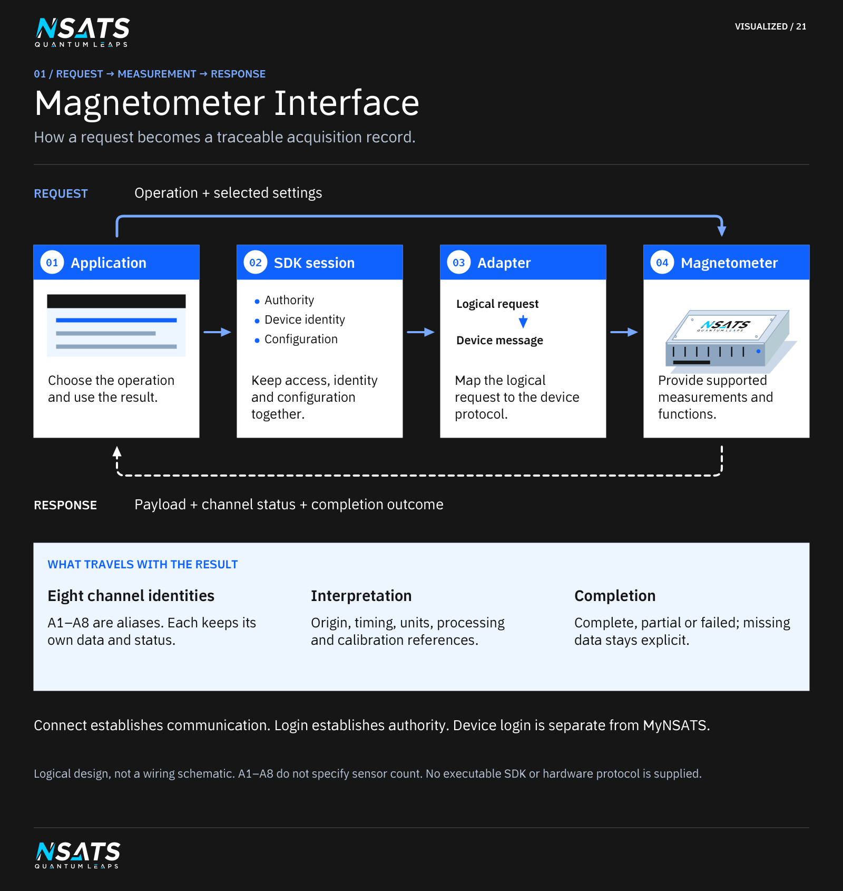

Device and application responsibilities
| Component | Design responsibility |
|---|---|
| Developer application | Select the device and operation; display or record the result and its status. |
| SDK session | Manage access state, interpret supported responses and associate results with the correct device and configuration. |
| Device adapter | Map the SDK's logical operations to documented hardware messages and responses. |
| Custom magnetometer | Supply the measurements and the equipment functions that its implementation actually supports. |
Digital signal processing (DSP) and averaging can be assigned to the device or the computer when the hardware contract is known. Each processing profile must identify where it runs. A logical SDK operation does not establish that the device already accepts a command with that name.
Connect and log in
Connection establishes communication; login establishes authority to perform an operation. The design keeps those states separate. Device credentials are distinct from a MyNSATS website account.
The initial sequence is disconnected, connected without authenticated access, authenticated, and acquiring data. A dropped connection makes the session unavailable. A local login screen must not be treated as hardware authentication: authorisation needs the mechanism actually supported by the device or its trusted access service.
The connection method, device identity checks, credential exchange, access expiry and permissions still require a hardware specification. Credentials should be supplied through an appropriate protected prompt or credential provider rather than embedded in example commands or acquisition logs. No username, default password or transport-security scheme is invented here.
Describe the eight channels
The examples use A1 through A8 as documentation aliases. They do not specify connector labels, antenna orientation or channel order on the actual equipment. An approved device description must map every alias to its physical input.
For each channel, establish the meaning and shape of the reading: a scalar, vector, sampled waveform or another representation. Until that is known, neither magnetic-field units nor radio-frequency units can be assigned. “Antenna” and “magnetometer input” are not enough to determine the sample format.
Each acquisition request needs a result for all eight expected channels, including an explicit unavailable status where a channel has no usable data. Do not replace missing or invalid data with a numeric zero.
Acquisition record
This is a logical record, not a wire format, binary layout or released data structure.
| Field group | Information needed |
|---|---|
| Origin | Device identity, session identity, configuration revision and whether the record is measured or illustrative. |
| Ordering | Acquisition identifier and, where supported, device sequence numbers. Host-assigned identifiers must be labelled as such. |
| Time | Device sample time if supplied, clock identity, and separately the computer's receipt time. Unknown sample time remains unknown. |
| Channels | Eight channel identities, individual payloads, representation, units and quality/status information. |
| Processing | Raw or processed designation, DSP profile, averaging settings and processing location. |
| Calibration | Applicable antenna and signal-source calibration references, including unknown or not-applied states. |
| Completion | Complete, partial or failed acquisition, with details of missing data. |
Receiving eight values in one message does not establish that they were sampled simultaneously. The device contract must specify channel timing, sampling rates and any synchronisation guarantees. A host timestamp must not be substituted for a device sample time without identifying that substitution.
Quality flags reported by hardware must be distinguished from conditions inferred by the SDK. “Unknown” is different from “good”. An opaque payload can be preserved for inspection, but cannot be presented as an interpreted physical measurement until its format is known.
Configuration and failures
The application should be able to inspect available operations and the active configuration. These facts may come from device discovery or a version-matched adapter description; unsupported discovery must not produce an invented capability list.
Configuration changes require a confirmed result and a new configuration reference. Separate raw, DSP and averaged outputs so the application can trace each result to its input. A lost connection during a hardware change can leave its outcome unknown; reconcile the device state before retrying. A timeout during an operation that changes hardware is reported as outcome unknown until reconciled. Use describe to inspect the active configuration, with calibration inspect for calibration records and selftest list for test scope and prerequisites; these inspection operations do not guarantee readback of a completed operation. The hardware contract must define the recovery steps and evidence needed to resolve an unknown outcome.
See the walkthrough and command reference.